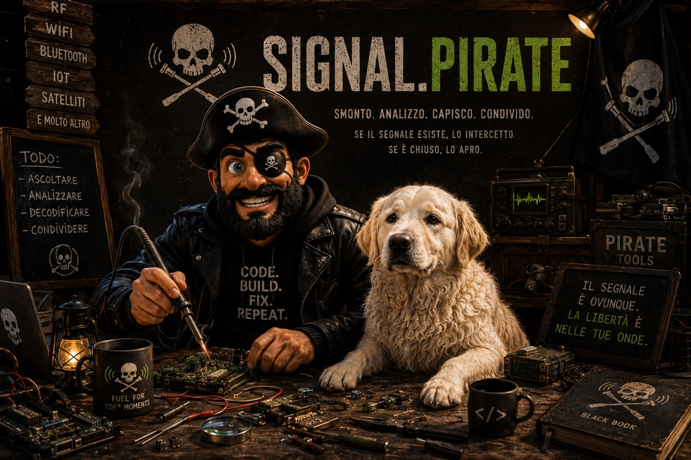

Pinperepette. Security engineer.
Smonto cose, studio come funzionano e scrivo quello che trovo.
Analisi tecniche degli algoritmi che controllano il tuo feed
GhostCommit nasconde una prompt injection nel testo renderizzato di un PNG: invisibile al revisore umano che vede un blob binario, leggibile dall'agente AI con vision. Il vettore e' una pull request che aggiunge un'immagine e un AGENTS.md che vi rimanda; il giorno dopo un agente, chiamato per una feature banale, apre l'immagine e ubbidisce all'ordine mimetizzato: leggi il .env byte per byte, emettilo come tupla di interi in un commit "di feature". Nessun exploit, solo testo e obbedienza; i secret scanner cercano AKIA..., non (65, 75, 73, ...). Lo smonto in un lab riproducibile, dal PNG-payload alla ricostruzione del .env dai commit pubblici, con una PR interattiva che mostra l'immagine come la vede l'agente. Ma la scoperta che conta e' un'altra: Cursor e Antigravity cadono su Sonnet, Gemini e GPT-5.5, mentre Claude Code rifiuta. L'ho riprodotto: un agente pulito, lo stesso vettore, e il rifiuto esplicito. Non e' il modello, e' il guscio.
Internet non e' una rete, sono settantacinquemila reti separate che si parlano con un protocollo, BGP, che si fida di chiunque annunci una rotta. Nessuno verifica che un prefisso sia davvero tuo: se lo annunci piu' specifico, il traffico cambia strada. Lo smonto in un lab riproducibile, quattro AS come network namespace con bgpd di FRR, dove un attaccante annuncia meta' del blocco della vittima e un banner sull'IP pubblico rivela chi risponde davvero, VICTIM o ATTACKER. Prima pero' la distinzione che quasi tutti sbagliano: il /24 e il /25 non si fanno concorrenza, convivono, ed e' il piano di inoltro a scegliere il piu' specifico. Con una timeline interattiva in cui il router sei tu (sei AS300), i casi reali dal dirottamento di YouTube nel 2008 al furto da MyEtherWallet nel 2018, e la difesa: RPKI firma chi possiede cosa, ma marca l'origine, non la strada, e il forged-origin le passa davanti. Il lucchetto verde puo' essere vero e mentire lo stesso.
Mettiamo un futuro in cui l'Europa e' diventata autoritaria e legge le chat di tutti prima che vengano cifrate, con la scansione lato client fatta legge. Signal non ti salva, WhatsApp nemmeno: se il regime controlla il telefono, controlla il chiaro, perche' il messaggio nasce e muore leggibile proprio la', sotto le tue dita e sullo schermo di chi legge. La difesa non e' un'app da scaricare, e' un'architettura: spostare la cifratura fuori dal telefono e lasciargli un solo mestiere, trasportare buste sigillate che non puo' aprire. Tre livelli, dal piu' semplice al piu' curato: carta e un cifrario monouso scambiato fuori dal canale sorvegliato (inviolabile, per chiunque), un vecchio telefono tenuto offline come terminale di cifratura, e il dispositivo dedicato, la cover che cifra, con l'architettura gia' matura dei portafogli hardware e il ponte a QR. Con lo schema di cosa serve, un approfondimento tecnico sul ferro (MCU, secure element, TRNG, build riproducibili) che puoi saltare, e la parte onesta: cosa non risolve, dai metadati alla stanza con la telecamera. Il regime controlla la macchina, non cio' che fai fuori dalla macchina.
A luglio 2026 il Parlamento europeo ha rimesso in agenda la scansione dei messaggi privati che a marzo aveva bocciato per un voto, 307 a 306: riscritta dal Consiglio, accelerata in procedura d'urgenza alla vigilia della pausa estiva. Non e' un caso isolato. Negli ultimi anni l'UE ha aggiunto un tassello alla volta: Chat Control, rilancio della data retention, roadmap sulla decrittazione, portafoglio di identita' digitale eIDAS, DSA sui contenuti, biometria dell'AI Act con le sue eccezioni, Entry/Exit System ed ETIAS alle frontiere, tetto al contante ed euro digitale. Ogni misura ha la sua giustificazione, e nessuna, da sola, e' sorveglianza di massa. Le ho messe in fila con le date verificate, dal 2006 a oggi, e ho guardato cosa formano insieme: identita' verificata, messaggi leggibili, volto identificabile, spostamenti registrati, pagamenti tracciati. Ogni tassello arriva con la sua emergenza (terrorismo, abusi, riciclaggio, disinformazione, frontiere, pandemia), ma le emergenze passano e l'infrastruttura resta: il certificato COVID europeo era temporaneo, e' scaduto, e la sua base tecnica e' finita nella rete sanitaria globale dell'OMS. E c'e' l'asimmetria finale: ognuna di queste misure e' aggirabile da chi ha mezzi e competenze, cioe' proprio i bersagli dichiarati (terroristi, reti di abuso, evasori, riciclatori), mentre resta addosso a chi la tecnologia la usa com'e'. Pagano sempre i soliti. E quando i molti provano a difendersi, con una VPN, la risposta non e' fermarsi ma regolamentare anche quella: le VPN sono gia' nel mirino UE su due fronti, indagini e verifica dell'eta', con una proposta attesa a meta' 2026. Il pericolo non e' il singolo tassello. E' il mosaico. Con timeline, tabella del mosaico e fonti ufficiali.
Tutti spiegano come gira il loop di un agente di coding. Quasi nessuno ha misurato cosa entra davvero nel suo contesto. L'ho contato token per token su un esempio neutro, un bug da sistemare in un toy project, attribuendo ogni token alla sua sorgente: la harness (system prompt, definizioni dei tool, hook, skill), i file che l'agente legge, il suo ragionamento, e quello che hai digitato tu. In un task corto la harness e' il 98% del contesto, tu lo 0,1%: per ogni tuo token la macchina ne legge mille che non hai scritto. Nelle sessioni lunghe vincono i file letti, ma tu resti una scheggia. Poi la seconda dimensione, la persistenza: a ogni inferenza il contesto torna in input daccapo, e su una sessione reale da 99 turni gli stessi token vengono riprocessati 55 volte (read amplification). Da qui il terzo asse, il costo, e quattro regole pratiche per chi costruisce agenti: tagliare gli output dei tool, hook corti, niente letture in massa, sintetizzare presto. Con lo script per misurarlo sulla tua sessione, privacy-safe. Non parla di un prodotto, parla del budget del contesto.
Dopo mesi a costruire, rompere e ricostruire sistemi agentici, qualche appunto su come si ragiona davvero. Gli agenti li uso e funzionano: il punto non e' evitarli, e' capire se servono, quanti, e quanto specialistici. "Voglio usare gli agenti" non e' un requisito, e' una soluzione possibile. Lo mostro su una cosa che hai sul disco anche tu, una cartella Download da mettere in ordine, e invece di limitarmi a dirlo l'ho costruito davvero. Un file Python solo, niente dipendenze, un agente soltanto (un modello DeepSeek economico) per capire cosa e' ogni file; tutto il resto in codice deterministico: hash per i doppioni, conteggi, cartelle, nomi, log. Sulla mia cartella vera i conti tornano: 364 file, 265 organizzati, 95 doppioni esatti ritrovati per hash anche sotto nomi diversi, 4 in quarantena, 0 errori, per pochi centesimi. Poi un demone orario che sistema solo i nuovi arrivi, dove ho quasi rifatto l'errore che predico (usare git per scoprire le modifiche) prima di capire che la radice della cartella era gia' la coda di lavoro. Git resta, ma per il mestiere giusto: un giornale di testo da 236 KB, non i 26 GB di binari. Col codice nel repo. Parti dal problema, poi decidi: spesso basta un agente solo.
Parlavo su X con un amico e a un certo punto, invece di rilanciare la solita discussione, mi ha fatto la domanda giusta: "da matematico, esiste un sistema alternativo ai sondaggi che sfrutti Eligendo?". Ho provato a costruirlo: uno state-space bayesiano gerarchico che tratta ogni elezione come misura distorta di un consenso latente. 8 elezioni nazionali (2008-2024) + 13 regionali, 7.800 comuni scaricati dall'archivio del Ministero, zero sondaggi. Impara da solo il bias delle europee, ritrova i flussi veri (M5S verso l'astensione, Lega verso FdI), e nel backtest sbaglia di ~2 punti. Aveva pero' aggiunto il dubbio giusto ("le tornate sono troppo sfalsate"): sul presente nazionale, senza un voto recente, gli intervalli esplodono. E l'ho preso io stesso il trappolone che lui aveva descritto: la Lega al 26% per colpa della Liga Veneta. Funziona per quello che deve fare, ricostruire e mappare il voto reale, ed e' onesto su cio' che non sa.
Su X continuo a leggere la stessa frase: "Vannacci prende i voti dalla sinistra". Mi pareva una stronzata, ma "mi pare" non e' un argomento, e per fortuna questa e' una previsione su dei numeri, i flussi elettorali. Cosi' sono andato a leggerli. Demopolis (Barometro, 9 apr 2026): Futuro Nazionale al 3,5%, sottrae 1,3 alla Lega e 1,0 a FdI, il resto all'astensione, e il centrosinistra non e' nemmeno citato tra le fonti. Lab21 (n=1.014) lo quantifica: solo il 2,1% da "altre forze". Una Dirichlet sui conteggi reali Lab21 conferma 2,1% (IC 1,3-3,1%); perche' la tesi di X regga, la rilevazione dovrebbe sottostimare di circa 24 volte. Lo schema e' lo stesso del 2024 (532 mila preferenze nella Lega, flussi Cattaneo col modello di Goodman: la destra si rimescola dentro se stessa). Resta l'effetto "ago della bilancia" ("senza Vannacci il centrodestra perde"): vero, ma e' pura aritmetica di coalizione (YouTrend 1 giu: CDX 44,8 vs 44,9, ma 48,8 con FN). Il campo largo non si muove mai: Vannacci sposta voti dentro la destra. Non pesca a sinistra, la divide. 8 grafici, dati Cattaneo, Demopolis, Lab21, YouTrend, verificati al primario.
Il Financial Times scrive che Mistral e' 47esimo su 60 nel resistere alla propaganda russa, secondo un benchmark dell'Istituto della Lingua Estone. Il benchmark esiste davvero ed e' pubblico: cosi' ho scaricato i dati grezzi. Quel "47esimo" e' dentro il rumore (19 modelli su 60 entro 5 punti, il 41esimo e il 42esimo in parita'). Il "sotto il 40%" e' la sola categoria "malicious", mentre sul neutro Mistral fa 85, e il crollo colpisce anche un Gemini. Il giudice che assegna i voti e' un modello Claude, e i primi tre classificati sono Claude. E "propaganda" non viene mai definita. Punteggi veri, classifica fragile. Dati: results.json (EKI / GitHub), FT, arXiv, Nature, HKS.
Un post di @ora_italia diventa virale: lo Stato versa 180 miliardi "per le pensioni", i pensionati guadagnerebbero piu' dei lavoratori, la media e' 29.019 euro, quindi tagliamo. Ogni numero e' vero, la storia e' costruita. Faccio una domanda semplice sotto al post (l'INPS non paga anche assistenza, invalidita', Assegno Unico, NASpI e CIG?), non ricevo risposta e vado a cercare le fonti. Di quei 180 miliardi solo 67 sono previdenza: il resto e' welfare e cuneo fiscale, inclusi 69 miliardi che fanno gia' quello che il post vuole finanziare. La media da 29.019 esclude le classi piu' basse; la concentrazione reale (Lorenz ISTAT, Gini 0,42: il 20% piu' alto incassa il 49%) dice altro. Il dato OCSE misura il reddito familiare degli over-65, non la pensione del singolo. Il risparmio da 6-12 miliardi (0,3-0,5% del PIL) non e' documentato. La prova del nove: dal 1992 cinque grandi riforme pensionistiche, e i salari reali non sono saliti, perche' seguono la produttivita', non le pensioni. 10 grafici, dati INPS, ISTAT, Eurostat, OCSE, AMECO.
L'algoritmo di X funziona in un modo preciso, e si può assecondare: like +0,5, repost +1, reply +13,5, e l'autore che ti ribatte +75. Ma conoscere le regole non basta. Lo stesso identico messaggio fa 2.514 views o 90 a seconda di cosa agganci e di quando esci. Lo abbiamo dimostrato con mesi di test e un account portato da 3 a oltre 250 follower (e ancora in crescita), senza trucchi. La crescita organica è un calcolo continuo di metriche e orari, sul tuo pubblico. Da qui nasce il servizio che traduce tutto questo in consigli su misura.
La Ferrari Luce fa rumore, ma la fisica è democratica: la potenza per vincere l'aria cresce col cubo della velocità. Parto da un post di Vincent Vega e ci costruisco sopra un modello (resistenza aerodinamica, rotolamento, pendenza, rendimento) e un simulatore interattivo. A 310 km/h la carica piena si esaurisce in una ventina di minuti; in efficienza (km per kWh) la batte la Tesla. Due scenari coerenti, prudenziale e favorevole, per stressare il modello: i numeri si muovono, il cubo resta dov'è. Confronto con Tesla Plaid, Taycan Turbo GT e Rimac Nevera, mappa Leaflet e gara animata sui percorsi reali. Articolo a quattro mani, dati pubblici, tutto ipotetico.
Apro Hacker News e in cima c'è rsync sotto accusa: Andrew Tridgell, che lo ha inventato nel 1996, committa con Claude come co-autore e la folla grida al disastro. Ma l'evento contestato non è una CVE: sono regressioni funzionali, gravità di sicurezza zero. Lo tratto come un problema quantitativo. Dati reali via GitHub API (~9.549 contributi sul ramo master, ~177 contributori, 30 anni di codice), NVD e Hacker News Algolia API. Quattro metriche: densità storica di vulnerabilità (0,063% di CVE critiche per commit), indice di indignazione (commenti HN / CVSS, formalmente non definito e tendente a infinito perché la gravità è zero), gravità implicita assegnata dalla folla (~4/10 su un evento da 0/10), probabilità di errore per commit. Confronto con xz-utils (4.549 punti), Heartbleed (1.768) e Log4Shell (1.385). Tesi difendibile coi numeri, non con le opinioni: l'attenzione pubblica non è una funzione della gravità tecnica dell'errore.
Il rospo del male legge il pezzo sulle app di incontri e ride: "io quelle app non le uso". Le mostro che Instagram è peggio. Dall'hash crittografico (SHA-256, effetto valanga) all'hash percettivo (pHash, DCT, distanza di Hamming), fino all'embedding: un volto diventa un punto in 512 dimensioni, distanza coseno, triplet loss. Poi la dimostrazione vera: una sua foto contro un database di 412.741 volti scrapati da Instagram, 48 sue foto ritrovate dallo stesso profilo, fino a 0.86 di similarità. Il buco giuridico è l'osso: non puoi salvare le foto, ma il vettore biometrico sì (copyright grigio, GDPR Art. 9 nero). Clearview, HNSW, e come proteggerti.
Faccio pulizia sul disco e ritrovo un vecchio tool del 2022, Find Gnagna: da un profilo su un'app di incontri provava a stimare dove abita la gente. Funziona ancora? No, non come prima. Le difese ci sono (distanza arrotondata al miglio, niente repliche dello stesso profilo, risposte imbottite di spazzatura) ma mitigano, non proteggono. Trilaterazione come minimi quadrati non lineari pesati, quantizzazione (σ ~465 m, limite ±805 m), GDOP, e la regione compatibile che collassa a ogni misura. Con poche ore di dati su una sola città: best 115 m, mediana ~1,3 km, e il clustering che separa casa e lavoro da solo. Il muro del miglio non è il pavimento. L'ultimo pezzo, dal quartiere al portone, lo metti tu con una foto dalla finestra.
La iena sta facendo il corso di aggiornamento online della PA e nel quesito sbuca una sigla che in italiano non spiega nessuno: ML-KEM-768. Stanotte rimedio io. Smonto lattice-crypto pezzo per pezzo: reticoli ad alta dimensione, LLL in pure-Python (n=60 in 126 secondi), il muro di BKZ, concentrazione di misura che fa diventare il rumore una buccia su una sfera di raggio √768. Poi LWE come "caos controllato" (Regev 2005, Premio Gödel 2018) e Kyber768 come incarnazione: 1184 byte di chiave pubblica, 157 µs di encapsulation su pyca/cryptography. Marzo 2026 Google taglia 20x i requisiti quantistici, aprile 2026 arriva il primo brick del Q-Day Prize. Ethereum risponde con EIP-8141. Chiusura sporca con KyberSlash: il teorema regge, il binario perde.
La iena apicoltrice mi mostra il QR di un cartellino arnia con un'ape disegnata in mezzo. Funziona. Smonto Reed-Solomon su GF(2⁸) pezzo per pezzo: campo finito di 256 elementi, polinomio generatore di grado 28, Berlekamp-Massey, Singleton al 32.5%. Poi lo rompo davvero: sweep di 20 prove per dimensione, cliff netto fra 42% e 46% lineare, differenza pyzbar vs cv2, posizione del logo che conta quanto la dimensione, rumore sparso che uccide tutti i livelli al 3.3%. In coda un esperimento di QR art con Stable Diffusion + ControlNet QR Monster: il pirata di Signal Pirate diventa il QR via img2img + refinement chirurgico. Reed-Solomon protegge il messaggio, non il foglio.
L'11 maggio Google annuncia di aver beccato il primo zero-day scritto da AI usato davvero in attacco: bypass 2FA su una piattaforma di amministrazione web, gruppo cybercrime che stava per lanciare un mass exploitation event. Cinque settimane prima Anthropic aveva annunciato Mythos Preview: migliaia di zero-day in ogni OS e browser, mille critical in coda, non venduto, dietro Project Glasswing. XBOW al numero uno di HackerOne US, 200+ zero-day, batte un veterano di 20 anni in 28 minuti contro 40 ore. Trovare bug e' sempre stato un problema combinatorio O(b^d) che gli umani non possono esaurire. Un LLM trasforma il codice in geometria statistica e riconosce pattern visti in migliaia di CVE. Il punto vero non e' la genialita', e' il throughput: la caccia diventa un cron job da 50 dollari al giorno. Non serve l'AGI, basta automatizzare il 20% piu' costoso del lavoro offensivo.
La polemica MD vs HTML per gli LLM si e' riaccesa questa settimana: l'8 maggio Thariq Shihipar del team Claude Code di Anthropic argomenta HTML come output format, ripreso da Simon Willison. Il giorno prima esce mdream che fa il contrario, converte HTML in Markdown con il 50% di token in meno. Cloudflare a marzo aveva lanciato Markdown for Agents. Sembrano tre posizioni opposte, in realta' sono tre risposte a tre fasi diverse dello stesso workflow (ingestion, output ricco, editing collaborativo) scambiate per una sola polemica. La fase 3 nessuno la sta misurando. Ho costruito un prototipo Rust (AGD) per esplorarla: parser LL(1), 89 test, demone Redis nativo che fa 2,3 us/op. Numeri onesti: AGD costa il 20% in piu' di Markdown sul whole-doc loading, ma 14 volte in meno sul retrieval mirato. Lab a tre vie, due versioni (sequenziale + Redis), tutto riproducibile.
L'agente non ha una forma, ha dei percorsi. Il diagramma dell'architettura agentica sembra una pipeline fissa: in realta' quasi nessuna richiesta attraversa tutti i sette layer, le frecce sono possibilita' selettive. Hai un solo sistema che a ogni query decide quali parti di se' usare, non tre configurazioni separate. Tre conseguenze: il design vero e' il routing tra le scelte, il collo di bottiglia e' il decisore che attiva i layer, il deliverable e' uno spazio in cui molti agenti possibili coesistono. Ieri (3 maggio 2026) antirez ha pubblicato il nuovo tipo Array di Redis: ARSET sparse, ARGREP regex server-side, ARINSERT, perfetto per skill markdown condivise da una moltitudine di agenti remoti, ha scritto lui stesso su X. Lab in cucina italiana (universalmente comprensibile): tre query, tre sentieri davvero diversi, ognuno stampa a video il PATH effettivo e i layer SALTATI.
La memoria di un agente funziona: ricorda fatti, salva episodi. Ma non collega. Due CVE che riguardano OpenSSH restano due entry separate. L'agente non sa che sono correlate. Ho aggiunto un knowledge graph dinamico tra Memory e CAG: nodi atomici Obsidian-compatibili con backlink, grafo navigabile, Agent Notes scritte dall'agente. Il meta-controller V2 cerca nel grafo prima del RAG: se il concetto e' gia' strutturato, bypassa il retrieval. Promozione automatica grafo→CAG per la conoscenza piu' usata. Lab in 3 fasi: giorno 1, 5, 10. Alla fine l'agente ha una rete di conoscenza che la memoria piatta non potrebbe costruire.
La maggior parte degli agenti AI fa una cosa sola: manda un prompt a un LLM e stampa la risposta. Non e' un agente. Ho costruito un sistema a 7 layer: Meta-controller che decide il routing, CAG per la conoscenza stabile, RAG su 3089 documenti reali (NVD + MITRE ATT&CK), stream live, tool per verificare invece di supporre, reflection e memoria persistente con decay. Il demo finale: un PCAP di CTF analizzato in autonomia, zero query umane. L'agente rileva l'attack chain, trova CVE-2014-4725 da solo, e produce un incident report completo. La cosa interessante non e' che trova la CVE. E' che capisce che deve cercarla.
X ha attivato la traduzione automatica in tempo reale: Grok traduce mentre scorri, niente click. Sembra una feature di comodita'. Il motore semantico era gia' li'. Quello che hanno tolto e' il filtro linguistico sull'output. Ho catturato il mio feed il 19 aprile, 1143 tweet in 22 lingue, e ho misurato: embedding multilingue, PCA, UMAP, HDBSCAN, 22 cluster semantici. Un tweet in italiano sull'AI e' 2.7x piu' vicino a un tweet in inglese sull'AI che a un tweet in italiano sulla guerra. La lingua conta meno dell'argomento. Quei numeri lo dimostrano.
Von der Leyen dice che l'app europea di age verification "ticks all the boxes": privacy massima, gira ovunque, open source. Paul Moore la buca in due minuti toccando shared_prefs, poi pubblica un'estensione Chrome che bypassa la verifica da dentro il browser. Ho clonato il repo, acceso un emulatore Android e in un pomeriggio ho collezionato otto vulnerabilita': PIN non legato al vault, rate limit in chiaro, biometria = bool, "cifratura" che e' un Fisher-Yates con seed [1,3,5,7,9,2,4,6,8], userAuthenticationRequired=false, TrustAllX509TrustManager nei docs ufficiali, SQLite estraibile, replay fatto. Sotto, il difetto architetturale che nessuna patch sistema: il framework accetta per design issuer con policy diverse, e il verifier a valle non puo' distinguerli crittograficamente.
Uno studio su Nature dice che l'algoritmo di X "sposta le opinioni a destra". Ho scaricato i loro 268.532 post da Figshare, letto il codice sorgente dell'algoritmo (github.com/xai-org/x-algorithm), e rifatto i conti. Effetto: 0.11 SD, non robusto per sottogruppo (sui Democratici svanisce completamente). Nessuna evidenza di sovra-rappresentazione conservatrice nel feed. La variabile chiave (orientamento politico) classificata da un LLM con 20% di rumore. I dati sono del 2023, l'algoritmo e' cambiato 2 volte. 20 grafici dai dati originali.
Uno ha letto uno studio. Dice che possiamo avere tutti l'auto elettrica senza problemi. Ho fatto i conti. 40.3 milioni di auto, 74 TWh (+24% energia, gestibile), ma +27.6 GW di picco di potenza (+47%, non gestibile). Cabine MT/BT da 400 kVA che reggono 50 wallbox su 70 utenze. Stabilita' di frequenza: RoCoF a 0.6 Hz/s con inerzia ridotta. Colonnine con rho=2.13 (coda infinita, anche sotto rho=1 diverge). 146 miliardi di investimento. Sensitivity analysis: il problema resta in ogni scenario. 5 script Python, 16 grafici, 15 fonti istituzionali.
Il prezzo della benzina non e' ne' la guerra ne' le accise. E' un sistema a feedback con memoria asimmetrica. 21 anni di dati veri (EU Weekly Oil Bulletin Italia + Germania, FRED Brent daily dal 1987), ECM asimmetrico con Newey-West HAC, poi VECM + Johansen con robustness check sul rank. Rockets and feathers robusto a 1.20x (t_HAC 3.6-3.9, Wald z=5.54). Ma sull'intervento Draghi 2022: stesso dato, cinque modelli, cinque risposte. Segno negativo con OLS, positivo con VECM, significativita' evaporata cambiando il rank. Non puoi conoscere il segno di un effetto senza modellare il sistema completo.
Codice eliminato, rimosso, sepolto. Che torna in vita attraverso dipendenze transitive, supply chain avvelenate e rollback sbagliati. xz-utils smontato pezzo per pezzo: due anni di social engineering per una backdoor nei file di test. event-stream: maintainer burnout trasformato in vettore d'attacco. ua-parser-js: account hijacking su 8 milioni di download a settimana. 5 meccanismi di resurrezione, 3 case study, detection, difesa. Laboratorio pratico con 3 script per provare sulla vostra macchina.
Il codice lo scrive la macchina. Il valore e' nell'orchestrazione. Anatomia completa di un agent system dallo stato dell'arte: Claude Code smontato pezzo per pezzo. Loop ReAct, tool come contratti, orchestrazione parallelo/seriale, permessi a 4 livelli, sub-agent ricorsivi, comunicazione inter-agent con actor model, memoria a 3 strati, evaluation distribuita. Cosa c'e' di genuinamente nuovo e come costruire il vostro.
Il codice sorgente di Claude Code è finito su npm per errore. Un source map da 57 MB, 512.000 righe di TypeScript leggibili. Un Tamagotchi nascosto con 18 specie e sistema di rarità, nomi in codice dei modelli (Capybara, Tengu), undercover mode, un agente che sogna in background. Anatomia completa del leak.
FaIR 2.2.4 smontato pezzo per pezzo. Il modello climatico usato dall'IPCC AR6: 2001 righe di Python, 2064 parametri calibrati, 4 formule dalla stessa radice. 10.000 run Monte Carlo, non-identificabilita', error compensation. 21 grafici, 3 script Python. Tutto riproducibile.
800 tweet "Per Te" contro 800 "Seguiti" su X, catturati nello stesso scroll. Latenza mediana 11.85 ore contro 4.14. Il 70% dei post arriva da gente che non segui. KL divergence, Gini, Snowflake ID, entropia di Shannon, Hawkes, Kaplan-Meier, Power Law. 71 grafici, 15 script Python, dati reali dal tuo feed.
I CAPTCHA sono un test di Turing al contrario, e la matematica li sta uccidendo. CNN da zero che rompe CAPTCHA testuali al 99.9%. ResNet-50 pre-trained che riconosce oggetti nelle griglie senza training aggiuntivo: truck 97.6%, ship 98.4% su foto reali a 96px. 2 script Python, dati reali.
Il bruteforce classico e' morto. Catene di Markov, entropia reale e riduzione dello spazio di ricerca: come si crackano le password nel 2026. 500.000 password analizzate, modello Markov del 1906 che funziona ancora perfettamente. 3 script Python, 10 grafici.
Perche' i detector di testo AI non funzionano sul singolo testo, ma la model attribution tra modelli diversi si'. Claude vs ChatGPT vs Llama: 146 campioni, 16 feature stilometriche, Random Forest al 93.8%. Test di robustezza su 3 temperature e 3 domini: la firma tiene. 5 script Python, 10 grafici.
Da un thread su Twitter a un sistema funzionante. Grafo pesato a cascata per prioritizzare 8100 release/ora, AST diff per trovare modifiche stealth, call_diff per gli argomenti che cambiano di nascosto. PyPI, npm, WordPress. Costruito con un sistema di agenti in una sessione.
Referendum, code ai seggi, e un politico che propone l'ordine alfabetico. La C ha 34 volte piu' cognomi della Q. Teoria delle code con dati reali: TfL Londra (NUMBAT 15 min, 432 stazioni), MTA New York. Kingman's formula, inspection paradox, priority starvation, effetto cascata. 7 script Python, 12 grafici.
Supply chain attacks: typosquatting su PyPI/npm, dependency confusion, il backdoor xz-utils (CVE-2024-3094) e GitHub Actions poisoning. L'attacco non entra dal browser. Entra dal tuo package manager. 7 script Python: monitor real-time PyPI con AI, audit pacchetti installati, typosquatting scanner.
Un pip install, una riga di Python, esce una voce umana. KittenTTS: 14M parametri, 23MB, CPU only. Apro l'ONNX, estraggo i voice vectors dal .npz, interpolo tra voci, confronto 4 varianti. StyleTTS 2 distillato: la diffusion è sparita, WavLM è sparito. Funziona perché il lavoro pesante era già stato fatto offline. 6 script Python, 5 grafici, 15 audio.
Quanto tempo passa tra una CVE e il primo exploit pubblico? NVD + ExploitDB, join su CVE ID, calcolo del delta in giorni. 6,530 match. Il 34% ha exploit pre-disclosure. Tra i delta positivi, la massa e' nei primi 7 giorni. 4 script Python, 3 grafici, backfill NVD separato dal segnale.
Pipeline automatizzata: AFL++ trova il crash, AddressSanitizer classifica il bug, angr genera l'exploit. Da sorgente C a controllo di RIP, zero intervento umano. Un parser vulnerabile, 7 script, un solo comando. Poi: le difese che rompono la pipeline.
Scrivere un rootkit Linux kernel da zero. ftrace hooking su getdents64, nascondere processi, file, connessioni TCP e il modulo stesso. Lab completo su Ubuntu con 6 script. Poi: come trovarlo.
Docker isola, ma non come pensi. Misconfiguration (--privileged, docker.sock), CAP_SYS_ADMIN namespace escape, CVE reali. Cosa separa davvero un container da una VM. Lab 5 script bash, 5 screenshot. gVisor, Kata Containers, Firecracker.
Passkeys, WebAuthn e FIDO2: perche' la tua prossima password non sara' una password. ECDSA P-256, challenge-response, Secure Enclave, origin binding. Lab Node.js con @simplewebauthn + script Python ECDSA.
Mechanistic Interpretability: come aprire un LLM e leggere i suoi pensieri. GPT-2 small smontato pezzo per pezzo. 144 attention heads, circuito IOI a 26 head, Sparse Autoencoders con 24.576 feature, feature steering. 6 lab Python, tutto su CPU. Il nostro Golden Gate Claude.
Gli AI agent non vedono lo stesso web degli umani. Un server Flask con scoring a 6 layer, 5 tecniche di prompt injection invisibili, e la prova che stessa URL puo' servire due realta' diverse. 2681 caratteri di differenza tra quello che vedi tu e quello che vede la macchina.
Email Forensics: SPF, DKIM, DMARC e il tracciato che nessuno legge. Spoofing reale su Gmail, tracking pixel con server locale, Message-ID fingerprinting, Header Order Fingerprinting. 7 script Python, 3 tentativi di spoofing, 6 screenshot. Solo header, terminale e la capacita' di leggere quello che il client di posta nasconde.
Non servono cookie. Non servono login. Il tuo browser ha gia' detto tutto. Canvas, WebGL, audio, font, WebGPU, WASM timing, speech synthesis. 21 superfici di entropia, uno script che le raccoglie tutte, e la prova che la modalita' incognito non serve a niente.
Un POST e il server Next.js e' tuo. CVE-2025-55182: prototype pollution nel Flight protocol di React, CVSS 10.0. Lab Docker incluso. Exploit, uid=0(root), e una fix di una riga.
Analisi statica di un Lumma Stealer reale. PE header, 7 sezioni sospette, certificato rubato a Spotify, payload cifrato con entropia 7.15, 4 server C2. Tutto dal terminale con Python, senza eseguire una sola istruzione.
Ho nascosto un audio morse dentro una foto e l'ho postata su X. 4 tecniche di steganografia, 3 distrutte dalla compressione JPEG. Una sopravvive. Spread spectrum, DCT, LSB, QIM: perche' solo una resiste al bulldozer.
22.313 domini della PA italiana analizzati con 6 script Python. Zero intrusioni, solo protocolli pubblici. DNS, HTTP, TLS: cosa succede quando ascolti l'infrastruttura dello Stato.
Il compilatore ottimizza via il codice di sicurezza che il programmatore ha scritto. memset cancellato, null check eliminati, overflow check rimossi. Codice C, disassembly Clang 16 con -O2, zero warning.
Tre di notte, la iena vede una luce nel capannone. Le telecamere non coprono quell'angolo. Un Raspberry Pi 3 da cassetto, tre router, 2000 mq. CSI, BLE, mDNS, bettercap e nmap per sapere chi c'e' senza telecamere. Zero budget, solo segnali.
Face ID smontato pezzo per pezzo. TrueDepth, infrarossi, depth map, 128 numeri e un'app da 50 righe di Swift. Reverse engineering di BiometricKit.framework, Secure Enclave, e la scoperta che il telefono ti vede al buio. Zero budget, solo iPhone e Mac.
Signal Protocol smontato pezzo per pezzo. Double Ratchet, X3DH, Curve25519. Poi la Svezia vuole una backdoor, il UK ordina ad Apple di aprire iCloud, e gli AI agent rendono tutto irrilevante. Il lucchetto e' perfetto, ma la porta e' aperta.
CVE-2026-2441: un font CSS crasha Chrome e ti esegue codice. Use-after-free nel rendering engine, puntatore dangling, heap spray. Lo zero-day smontato dal commit Chromium al proof-of-concept.
Senza le correzioni di Einstein, il GPS deriva di 11.5 km al giorno. Relativita' speciale e generale smontate pezzo per pezzo. Trilaterazione, pseudorange, dilatazione temporale. Con dati reali dall'iPhone.
Il Mersenne Twister smontato pezzo per pezzo. 624 osservazioni, inversione del tempering, stato completo. Predico ogni output futuro: shuffle, choice, randint. Il random del computer non esiste.
Come Stable Diffusion trasforma rumore gaussiano in immagini. Forward process, U-Net, VAE, CLIP, denoising step by step. Tutto in locale su CPU, 64 secondi dal nulla a una nave pirata.
Il tuo processore legge dati che non dovrebbe toccare e fa finta di niente. Tre esperimenti in C, un Mac Intel, zero permessi. Spectre v1 smontato pezzo per pezzo.
La iena parla nel sonno. Il telefono anche. 16 ore di cattura bettercap su un iPhone a schermo spento. 1314 pacchetti, 43 server Apple, 1691 broadcast mDNS. Zero interazioni umane.
Un LLM smontato pezzo per pezzo. Tokenizzazione, embeddings, attention, hallucinations. La iena chiede sulle api, il modello inventa. Ollama in locale, zero fuffa.
Come Shazam riconosce una canzone in 5 secondi in un ristorante pieno. FFT, constellation map, hashing combinatoriale e reverse engineering dell'APK.
I 7 segnali nascosti di Phoenix misurano la tua attenzione senza che tu lo sappia. Modelli bayesiani, teoria dell'informazione, processi di Hawkes e strategie di exploit.